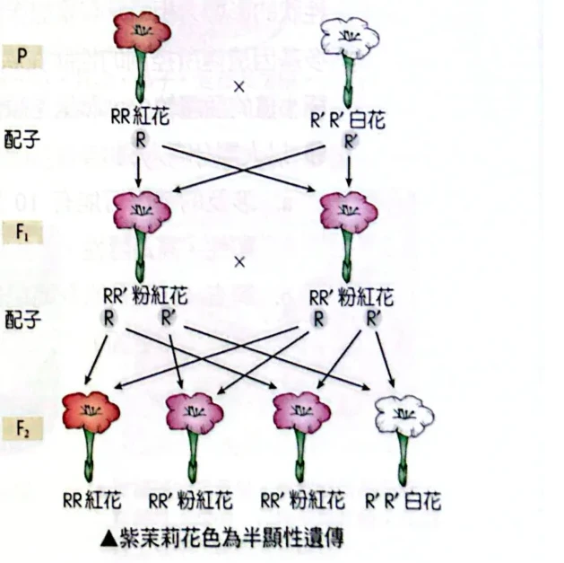
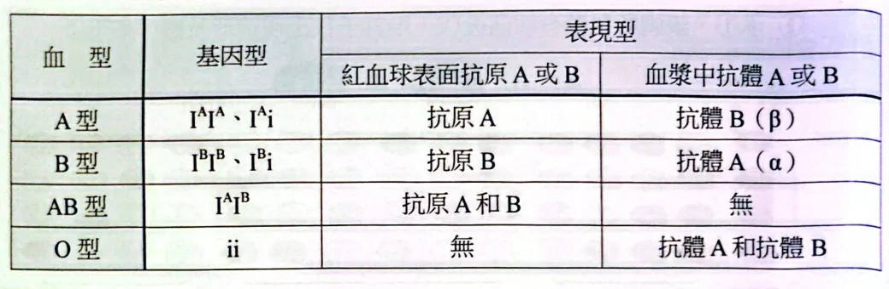
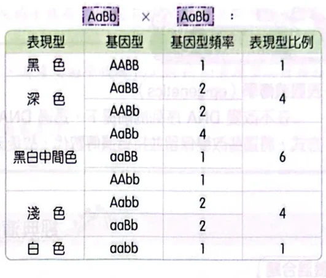
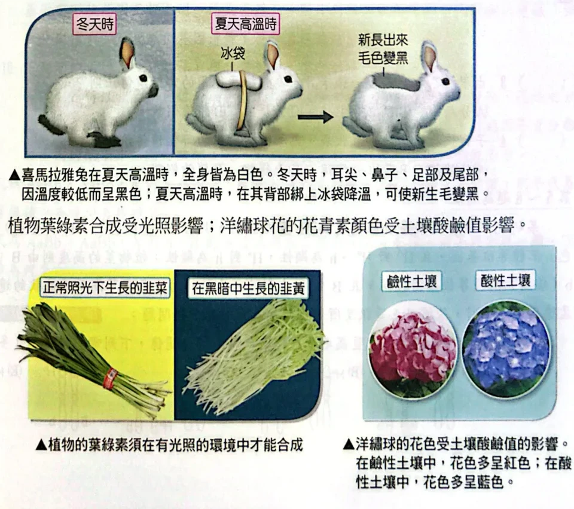
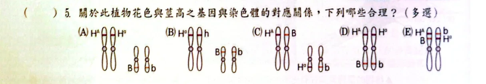
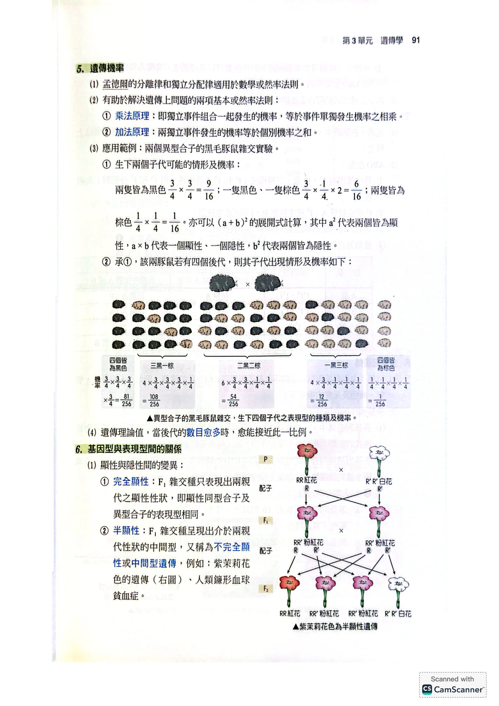
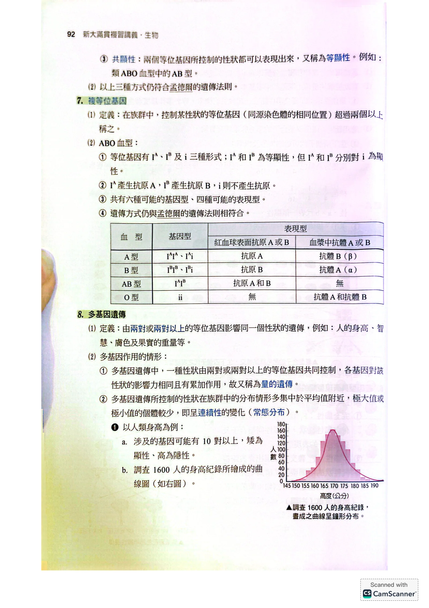
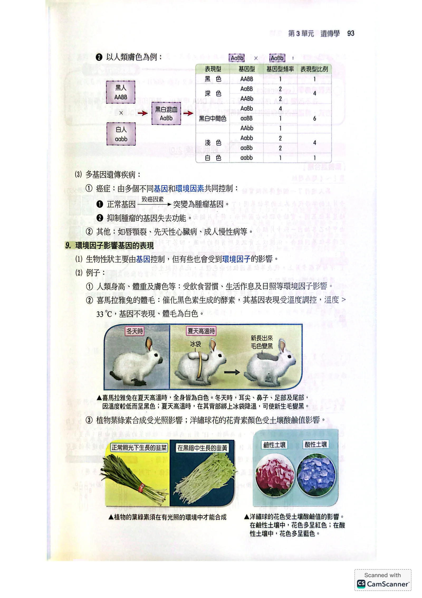
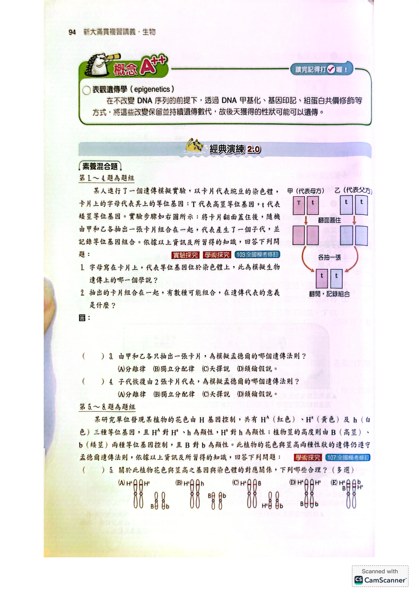
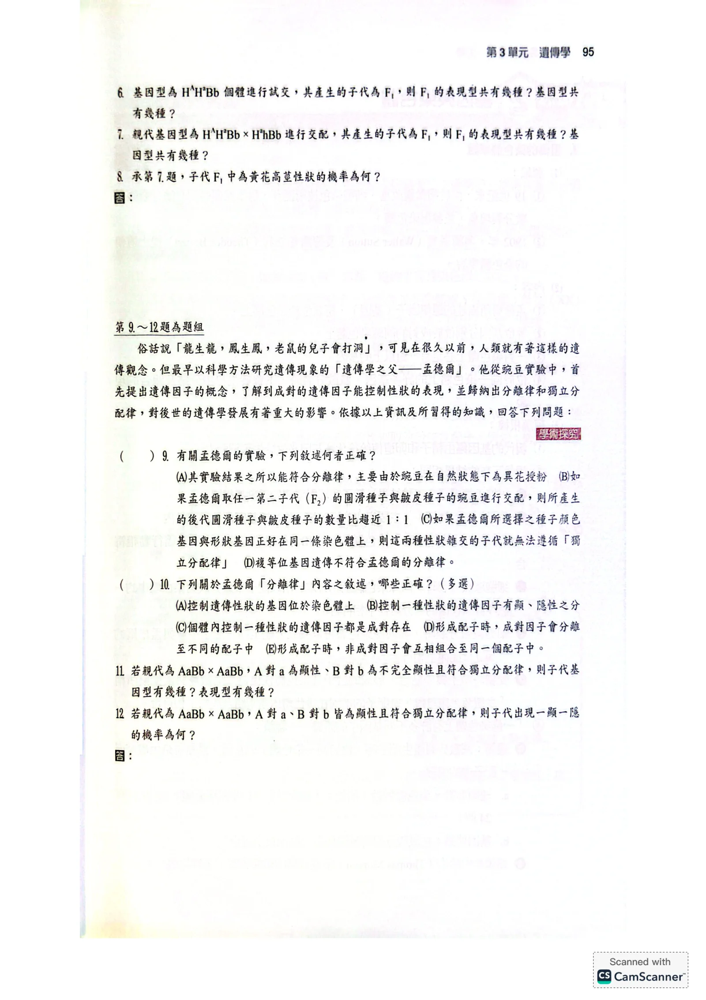

遺傳怎麼傳，和性狀怎麼表現，是兩個問題
上一節用 Tt × Tt 推出基因型比1：2：1，再把 TT 與 Tt 合併成高莖，才得到表現型比3：1。如果異型合子的樣子改變了，後代的比例會怎樣？
先保留上一節的骨架：一般二倍體個體在一個基因座帶有兩份等位基因，形成配子時分開，受精後重新配對。這是傳遞規則。至於哪幾種基因型看起來相同，則要另外看顯性關係與觀察的特徵。
| 題目在問什麼？ | 要用的判斷 | 例子 |
|---|
| 配子帶哪一份？ | 分離律 | Aa的配子帶A或a，各1/2 |
|---|
| 兩基因座怎麼搭配？ | 是否獨立分配；有無可觀察的連鎖 | 可否把A/a與B/b的機率相乘 |
|---|
| 子代看起來如何？ | 等位基因的表現關係、其他基因及環境 | Aa是否和AA相同 |
|---|
不完全顯性與共顯性：看異型合子表現什麼
不完全顯性：異型合子呈中間表現
沿用原圖記號：R與R′是同一基因座的兩種等位基因，分別對應紅花、白花的同型合子。紅花 RR 與白花 R′R′ 交配，F₁全是 RR′，卻呈現粉紅色，這叫不完全顯性，原講義也稱半顯性。

原講義的不完全顯性：紅花與白花產生粉紅花，F₂再出現三種花色原講義PDF第89頁・印刷第91頁・點圖放大
讓粉紅花互相交配，兩方各提供 R 或 R′，機率都是1/2，四個等可能受精組合是：
| 配子 | R | R′ |
|---|
| R | RR
紅花 | RR′
粉紅花 |
|---|
| R′ | RR′
粉紅花 | R′R′
白花 |
|---|
基因型仍是 RR：RR′：R′R′＝1：2：1。這次三種基因型恰好對應三種花色，所以表現型也是紅：粉紅：白＝1：2：1。改變的是表現型的分類，並不是兩份等位基因在配子裡混成了第三份。
共顯性：兩種特徵可以同時辨認
ABO血型的 IAIB 個體，紅血球表面同時具有A、B抗原。這不是產生「介於A和B之間」的混合抗原，而是兩種抗原都表現，稱為共顯性或等顯性。
| 關係 | 異型合子怎麼看？ | 典型例子 |
|---|
| 完全顯性 | 與其中一種同型合子歸為相同表現型 | 豌豆 TT、Tt皆高莖 |
| 不完全顯性 | 呈中間程度，能與兩種同型合子區分 | 紅花×白花的F₁為粉紅花 |
| 共顯性 | 兩種特徵同時可辨認 | AB型同時有A、B抗原 |
原講義還把鐮形血球貧血列在半顯性例子中，這需要限定觀察尺度：以疾病遺傳分類，鐮形血球疾病屬體染色體隱性；不能把疾病是否發生、血紅素種類與細胞形狀混成同一個「中間型」。此處用花色示範不完全顯性，用抗原示範共顯性。MedlinePlus的疾病遺傳說明。
複等位基因：族群有多種，個體仍只帶兩份
複等位基因是指在族群中，同一基因座存在超過兩種等位基因。關鍵是「族群」：一個一般二倍體個體在這個基因座仍只有兩份，分別來自雙親，不會因為族群有三種版本，就在自己體內同時放進三份。
高中常用的ABO模型有三種主要等位基因：IA、IB、i。其中 IA 與 IB 共顯性，兩者分別對 i 為顯性。

ABO血型原表：基因型、紅血球抗原、血漿抗體要分欄讀原講義PDF第90頁・印刷第92頁・點圖放大
| 血型 | 可能的基因型 | 紅血球表面 | 血漿中通常有的ABO抗體 |
|---|
| A | IAIA、IAi | A抗原 | 抗B |
| B | IBIB、IBi | B抗原 | 抗A |
| AB | IAIB | A與B抗原 | 通常無抗A、抗B |
| O | ii | 無A、B抗原 | 抗A與抗B |
六種基因型、四種表現型，是因為A型與B型各能對應兩種基因型，AB與O型各對應一種。這裡用的是一般ABO遺傳模型，未納入罕見變異與其他基因座造成的特殊表現。
ABO交配：先列親代可能的配子
例一：A型與B型，能生出四種血型嗎？
可以，但需要兩位親代分別是 IAi 與 IBi。A型親代提供 IA 或 i；B型親代提供 IB 或 i，各占1/2。
| 配子 | IB | i |
|---|
| IA | IAIB
AB型 | IAi
A型 |
|---|
| i | IBi
B型 | ii
O型 |
|---|
所以四種血型各占1/4。如果只知道雙親是A型、B型，卻不知道有沒有帶 i，就不能保證四種都可能出現。例如 IAIA × IBIB 的子代全是AB型。
例二：AB型與O型，為什麼不會生出O型？
IAIB × ii 時，O型親代只給 i；AB型親代給 IA 或 IB。因此子代為A、B型各1/2，沒有 ii，也沒有 IAIB。
由子代回推：O型提供了什麼證據？
在一般ABO模型下，O型子代的 ii 必須一份來自父方、一份來自母方。因此若A型、B型雙親生出O型子代，可回推出雙親分別為 IAi、IBi。這是以明確模型解釋題目，不是單憑血型就能完整判定現實親子關係。
多基因：不同基因座，共同影響一種性狀
複等位基因是在同一個位置有多種版本；多基因遺傳則是兩個或更多基因座共同影響一項性狀。例如身高與皮膚色素，不能只靠一對等位基因分成兩類。
| 名稱 | 「多」在哪裡？ | 本節例子 |
|---|
| 複等位基因 | 同一基因座，族群有多種版本 | ABO的三種主要等位基因 |
|---|
| 多基因遺傳 | 多個基因座，影響同一項性狀 | 身高、皮膚色素等 |
|---|
先用兩個基因座，理解「累加」
為了看懂原表，先設一個理想色素模型：A/a與B/b獨立分配；每一份A或B都增加相同一單位色素，a與b不增加；暫時忽略其他基因和環境影響。在這個設定下，AABB有4單位、AaBb有2單位、aabb有0單位。

取自原圖的兩基因座累加表：本頁以理想色素模型解讀原講義PDF第91頁・印刷第93頁・點圖放大
AABB × aabb 的F₁全是 AaBb。再做 AaBb × AaBb，兩個基因座各自的基因型比都是1：2：1。要依「增加色素的份數」分組，才會得到下表：
| 增加色素的份數 | 符合的基因型 | 16組中的份數 |
|---|
| 4 | AABB | 1 |
| 3 | AABb、AaBB | 2＋2＝4 |
| 2 | AAbb、AaBb、aaBB | 1＋4＋1＝6 |
| 1 | Aabb、aaBb | 2＋2＝4 |
| 0 | aabb | 1 |
因此有9種基因型、5種色素量，表現型比1：4：6：4：1。和9：3：3：1不同，是因為這次不是把每個基因座分成「有顯性／沒顯性」兩類，而是按色素量重新合併。
影響性狀的基因座與環境因素變多時，族群常呈現較連續的差異，中間值較多、極端值較少。但只看一張鐘形分布圖，不能反推出每個人的基因型，更不能確定參與的基因座數目。
原講義也列出癌症、唇顎裂、先天性心臟病與慢性疾病等複雜例子。應理解為：其中許多情況涉及多個基因與環境因素，不能把每一種疾病一律套成相同模型。以癌症為例，促進細胞增生的途徑異常、抑制腫瘤的功能喪失，都可能參與發展；風險不是單一基因型的固定結果。
環境：基因型相同，表現仍可能不同
如果同一株植物在不同環境長出不同顏色，先不要急著宣布「基因變了」。環境可能改變酵素活性、物質供應或基因表現，使同樣的基因型產生不同表現。

原講義的環境例子：局部低溫與兔毛色、光照與韭菜、土壤條件與繡球花原講義PDF第91頁・印刷第93頁・點圖放大
喜馬拉雅兔：局部溫度影響色素形成
這類兔的色素形成涉及對溫度敏感的酪胺酸酶。身體較冷的部位，酵素較能發揮作用，新生毛較容易形成深色色素；較暖的部位則較少。原圖在局部降溫後長出黑毛，用來顯示「同一隻兔，不同局部環境」的效果。
這不表示毛一接觸冰就立即由白變黑，也不能把原文某個溫度值當成所有兔子一致的開關。要觀察的是新長出來的毛及其色素形成條件；溫度敏感的酵素活性，也不能直接改寫成「整個基因不再存在」。
韭菜與韭黃：光照影響葉綠素形成
原圖比較正常光照與遮光培養。遮光使韭菜葉綠素形成受到影響，因此呈黃白色；這是栽培環境影響表現的例子，不是把綠色等位基因「換成黃色等位基因」。
繡球花：不只記酸藍、鹼紅
對能隨土壤條件變色的大葉繡球等品種而言，土壤酸鹼度會影響鋁的可利用性，鋁與花色色素的作用又影響顏色。較酸的土壤通常較利於鋁被利用，常見藍色；鋁不易利用時常見粉紅色。品種與鋁的條件也要符合，不是任意繡球花只要改pH都能變成指定顏色。
表觀遺傳：序列不變，調控狀態可以改變
同一個人體內的神經細胞與肌肉細胞，大致有相同的DNA序列，卻執行不同功能，因為它們使用基因的方式不同。表觀遺傳研究的是：在DNA鹼基序列未改變的情況下，與基因活性有關的狀態如何改變、維持。
常見機制包含DNA甲基化、組蛋白修飾等，會影響染色質狀態與基因的使用。有些狀態可隨細胞分裂維持，使一群後代細胞延續相似的基因活性；實際作用仍依位置、細胞與情境而定，不能把所有甲基化都寫成同一種效果。
| 情況 | 主要改變 | 不能直接推出的結論 |
|---|
| DNA突變 | 鹼基序列改變 | 不代表一定改變外觀；也不一定進入生殖細胞 |
|---|
| 表觀遺傳調控 | 序列未變，調控狀態改變 | 不代表每一種改變都能跨世代傳下去 |
|---|
| 環境改變表現 | 可作用於代謝、酵素或調控等不同層次 | 不能只靠外觀變化，就認定機制必為表觀遺傳 |
|---|
經典演練1–12：先決定怎麼傳，再決定怎麼分組
原講義這12題跨越前一節與本節。以下保留原題條件，依解題任務分成六組。先從卡片模型確認分離，再處理複等位基因與兩個基因座；最後回頭判斷定律的適用前提。
母方用兩張卡片表示 Tt，父方用兩張卡片表示 tt。每次由雙方各隨機抽一張，再把兩張放在一起表示一個子代；每輪抽後放回。
- 若卡片上的字母表示染色體上的基因，這項對應呼應哪一個學說？
- 子代有幾種不同的等位基因組合？各占多少？
- 「雙方各只抽一張」主要模擬分離律、獨立分配律、天擇或鎖鑰學說中的哪一項？
- 子代最後又有兩張卡片，要如何解釋？原題若仍只能從上述四項選擇，應選哪項？
看答案與詳解收起
答①遺傳染色體學說。②Tt、tt兩種，各1/2。③分離律。④受精使兩方配子提供的等位基因重新成對；依原題分類仍選分離律。
解第1題：卡片代表什麼？
把等位基因放在相應染色體的位置，是把遺傳因子的傳遞和染色體的行為連起來，呼應遺傳染色體學說。這是後來的細胞學解釋，不是說孟德爾當年已直接觀察到基因位置。
第2題：抽法與基因型分開數
母方給T或t，各1/2；父方一定給t。因此子代 Tt 與 tt 各1/2。若把父方兩張相同t卡另標為位置1、2，會有四種等可能的實際抽取路徑，但合併後仍只有兩種不同基因型。
第3、4題：分開，然後重新配對
各抽一張對應形成配子時成對因子分開；雙方各給一張，則模擬受精後恢復成對。原題把「個體成對、配子分開」合在分離律的說明中，因此第4題仍預期選分離律。嚴格說，恢復成對這個動作是受精，本身不是獨立分配。
本模型只追蹤一個基因座，沒有第二個基因座可供比較，不能用它單獨證明獨立分配律。天擇與鎖鑰學說也不在描述這個抽卡步驟。
小結抽卡先對應配子，再對應受精；不要把四條抽取路徑當成四種基因型。
第5–8題共用一個植物模型：花色基因座有 HA（紅）、Ha（黃）、h（白）三種等位基因，顯性關係為 HA > Ha > h；莖高由另一基因座B/b控制，B高莖對b矮莖完全顯性。依原題簡化，兩基因座獨立分配。

經典演練第5題的原始染色體選項：先檢查等位基因的位置原講義PDF第92頁・印刷第94頁・點圖放大
使用上方原圖與植物模型，回答：
- 第5題：哪些染色體配置符合原題的基本設定？先檢查同源染色體上等位基因的位置，再依兩基因座獨立分配的簡化設定作答。
- 第6題：
HAHaBb 與雙隱性個體試交，子代表現型、基因型各有幾種？
看答案與詳解收起
答⑤原題在不考慮同染色體遠距重組的設定下選A、B。⑥表現型4種、基因型4種，各種組合皆1/4。
解第5題：先看位置，再看傳遞是否獨立
A、B都把花色的不同等位基因放在一對同源染色體的相同基因座，B/b則在另一對同源染色體上，符合本題直接按獨立分配處理的模型。C、E把花色與莖高的基因對在同源染色體的相同位置，基因座對應不合理。
D把花色與莖高放在同一對染色體的兩個基因座，位置本身可以合理；原題在基本連鎖模型中不把它列作獨立分配答案。但如果兩座相距很遠，重組率可接近50%，觀察結果也可能近似獨立分配。因此不能僅由「同一染色體」就斷言現實中絕無獨立分配的比例。若只問圖上位置是否合法，D不能直接刪掉。
第6題：試交對象要在兩座都同型隱性
花色最隱性是 hh，莖高是 bb，所以試交為 HAHaBb × hhbb，不是與另一株紅花高莖交配。
| 待測親代的配子 | 與hb結合的子代 | 表現型 |
|---|
| HAB | HAhBb | 紅花高莖 |
| HAb | HAhbb | 紅花矮莖 |
| HaB | HahBb | 黃花高莖 |
| Hab | Hahbb | 黃花矮莖 |
四種配子各1/4，另一方只給hb，所以四種基因型、四種表現型皆各1/4。沒有白花，因待測親代沒有h可提供。
小結基因位置是否合理、兩座是否可視為獨立，是兩道不同的檢查。
親代為 HAHaBb × HahBb，兩基因座獨立分配。
- 第7題：子代的表現型、基因型各有幾種？
- 第8題：子代為黃花高莖的機率為何？
看答案與詳解收起
答⑦表現型4種，基因型12種。⑧黃花高莖機率3/8。
解先處理花色：不要看見三個版本就猜三種花色
第一方給 HA 或 Ha；第二方給 Ha 或h，各1/2。四種基因型各1/4：
| 花色基因型 | 表現型 |
|---|
| HAHa | 紅花 |
| HAh | 紅花 |
| HaHa | 黃花 |
| Hah | 黃花 |
所以花色有4種基因型、2種表現型，紅、黃各1/2。第一方不能給h，因此沒有 hh，不會有白花。
再處理莖高：Bb × Bb
基因型 BB：Bb：bb＝1：2：1，有3種；表現型高、矮有2種，高莖占3/4。
第7題：種類相乘
因兩座獨立，基因型種類＝4×3＝12；表現型種類＝2×2＝4。種類數不是機率，12種基因型也不是各占1/12。
第8題：指定事件的機率相乘
黃花占1/2，高莖占3/4，所以 P(黃且高)＝1/2×3/4＝3/8。要算「黃且高」，不能把兩個機率相加。
小結先算每一座的基因型和表現型，再分別相乘；不要把種類數當成等機率。
最後四題不再換新模型，而是檢查：哪些敘述真的屬於孟德爾的推論？改變顯性關係以後，哪些計數需要重新合併？
關於孟德爾實驗，原題要選出一項正確敘述：
- 能符合分離律，主要因豌豆自然狀態為異花授粉。
- 任取F₂圓滑豌豆與皺皮豌豆交配，後代圓滑：皺皮皆趨近1：1。
- 顏色、形狀基因若位於同一染色體，子代就無法遵循獨立分配律。
- 複等位基因遺傳不符合分離律。
原C的用語較簡化；詳解區分考題預期與需要補上的條件。
看答案與詳解收起
答原題預期C，但須補上「兩基因座存在可觀察的連鎖」前提；單說同一染色體並不充分。
解A錯：豌豆自然狀態主要自花授粉，有助建立穩定品系；人工再控制雜交。自花或異花的名稱，也不是分離律成立與否的根本原因。
B錯：F₂圓滑個體可能是 RR 或 Rr。與 rr 交配，前者全圓滑，後者才是1：1。因此「任取」一株就保證1：1不對。
C：在原題忽略遠距重組、以同染色體表示明顯連鎖的基本設定中，C是預期答案；較嚴謹應改為「若兩基因座有可觀察的連鎖，就不能按獨立分配的配子機率計算」。同染色體上相距很遠的基因座，可能得到接近50%的重組率，看起來近似獨立。
D錯：族群有三種以上等位基因，仍不妨礙單一二倍體個體的一對等位基因在形成配子時分開。ABO正是例子。
小結複等位與顯性延伸不會自動推翻分離律；連鎖才是在問不同基因座的搭配機率。
以下哪些敘述包含在原講義對孟德爾分離律與原始遺傳模型的整理中？（多選）
- 控制遺傳性狀的基因位於染色體上。
- 控制性狀的遺傳因子有顯性、隱性之分。
- 個體內控制一項性狀的遺傳因子成對存在。
- 形成配子時，成對因子分離到不同配子。
- 形成配子時，非成對因子互相組合到同一配子。
原題問「孟德爾分離律內容」，把完全顯性模型也併入；此處保留原選項並明確區分。
看答案與詳解收起
答依原講義的歷史模型整理，預期B、C、D；若只問現代分離律的核心，重點是C、D。
解C、D：在本題的單基因、二倍體模型中，個體有成對因子，形成配子時分開；這是分離規則的核心。
B：孟德爾研究的那些豌豆性狀呈現完全顯性，所以教材把顯、隱性放進他的原始模型。但我們本節已看到不完全顯性與共顯性也能符合分離律；因此不能把B擴張成「所有基因都有完全顯隱性」或「分離律必須完全顯性才成立」。
A：把基因定位在染色體上，是後來遺傳染色體學說提供的解釋，並非孟德爾當年的直接結論。
E：涉及不同基因座之間的搭配，是獨立分配的討論範圍，還要檢查適用前提，不能算成單一基因座的分離核心。
小結記住歷史題的出題範圍，也要分清「顯性如何表現」與「等位基因如何分離」。
兩題親代皆為 AaBb × AaBb，A/a與B/b獨立分配，但顯性條件不同：
- 第11題：A對a完全顯性，B/b為不完全顯性。子代有幾種基因型、幾種表現型？
- 第12題：兩座皆完全顯性。子代呈現「一種顯性表徵、另一種隱性表徵」的機率為何？
看答案與詳解收起
答⑪基因型9種，表現型6種。⑫3/8。
解第11題：同樣基因型，換一種合併方式
A座有 AA、Aa、aa 三種基因型，合併成2種表現型；B座也有 BB、Bb、bb 三種基因型，但不完全顯性可區分3種表現型。
| 要數什麼？ | A座 | B座 | 合計 |
|---|
| 基因型種類 | 3 | 3 | 3×3＝9 |
| 表現型種類 | 2 | 3 | 2×3＝6 |
顯性條件改變，並沒有改掉親代產生的配子種類；改變的是子代如何歸類成表現型。
第12題：把「一顯一隱」拆成兩個不重疊的情況
A_bb：A表現顯性、B表現隱性，機率 3/4×1/4＝3/16。aaB_：A表現隱性、B表現顯性，機率 1/4×3/4＝3/16。
兩種情況互斥，可以相加：3/16＋3/16＝6/16＝3/8。若只寫3/16，漏了一個方向；A_B_是兩顯，aabb是兩隱，都不符合題意。
小結第11題在數種類，第12題在算機率；先看清任務，再選擇合併、相乘或相加。
本單元整理：先辨認「變的是哪一步」
| 條件 | 主要影響哪一步？ | 解題提醒 |
|---|
| 不完全顯性／共顯性 | 基因型如何對應表現型 | 先算基因型；不要直接套3：1 |
|---|
| 複等位基因 | 親代可能帶哪些版本 | 族群有多種，單一二倍體個體仍帶兩份 |
|---|
| 多基因 | 多個基因座如何共同影響性狀 | 先看是否累加、是否等效、是否獨立 |
|---|
| 連鎖 | 不同基因座的配子組合機率 | 不能未確認條件就乘成獨立事件 |
|---|
| 環境／表觀遺傳 | 性狀形成與基因調控 | 外觀改變不必然等於序列突變或跨代遺傳 |
|---|
如果遇到新題型，先問三件事：有幾個基因座？每個親代有哪些等位基因？基因型要如何合併成表現型？把這三步寫清楚，比背一串比例更能應付條件改變。下一節將回到染色體，看這些遺傳因子在細胞裡如何排列與分離。
核對原講義全頁（生物1 PDF89–93）
本節從PDF89下半的顯性關係開始；同頁上半的四子代機率已在3-1解說。PDF92–93經典演練1–12在本節六組題目中逐題整理，原題較簡化的假設另作說明。

PDF第89頁／印刷第91頁
PDF第90頁／印刷第92頁
PDF第91頁／印刷第93頁
PDF第92頁／印刷第94頁
PDF第93頁／印刷第95頁延伸核對：NCBI：ABO血型；NHGRI：多基因性狀；NHGRI：表觀基因體；喬治亞大學推廣教育：繡球花的土壤與花色。